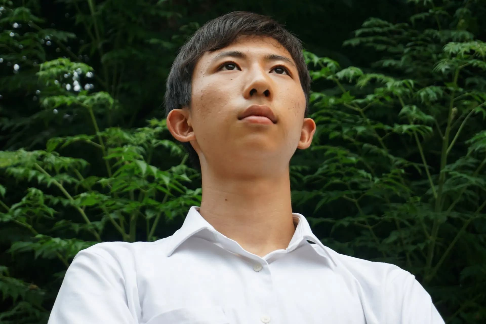

修猷館高校 大運動会2022
↓大運動会によせて
スローガン
{kind=link}
永遠の時を生きる存在、不死鳥。
新たな時代を迎えるために幾度も蘇るとされる。
自ら炎に身を投じ生まれ変わるその姿は、
新たな大運動会にこの夏を懸けて
個性を輝かせた修猷生の姿と重なる。
今日、一千の想いが不死鳥のようにはばたく。
伝統を永遠に繋いでいくために。
そこにまた、新たな伝説を紡いでいくために。
館長より
「今年は、思いっきり修猷大運動会をやる！」
今年度はじめの学校としての宣言。そのために、学校として・修猷生として最善を尽す。
今、学校の当たり前が通用しない。当然、修猷大運動会も。だから、挑戦（改革）と安全・安心、一歩前への勇気。
困難な状況（環境の変化、コロナ禍、多様な価値観等）であるからこそ新たに創り出せるものがある。
互いに思いを語り、知恵を振り絞り、苦悩し、挑み、こだわりをもって成し遂げる。 とてつもない自由な集団体験、日本に誇りうる行事：修猷大運動会。
君たちが創造する最高の感動で、世の中を元気に導くメッセージを発信しよう！
最後に、復活を願う『すまん』という魔法の言葉。 かつてよく使われていた失敗から学ぶ修猷文化の一つ。 一瞬にして次のチャレンジに向かうこだわりとおおらかさのある合言葉。
{kind=link}
運営委員長より
 運営委員長 大橋了士
{kind=link}
今年の大運動会は、どんな大運動会になるだろうか。
私は、「歴史に類を見ない大運動会」になると思っている。無論、コロナ禍での開催だから例年と違うということではない。今までにないやり方を探っていくことによって、歴史に無い大運動会が生まれるということである。
私達は、伝統を過信してただ従うのではなく、それが現在の修猷館の在り方に適っているかを確認し、もし適わないものがあれば熟慮の上で新しいやり方を探っていくようにしている。確かに、伝統は長く続いているために改善の余地が少ない。しかし、だからこそ新しいやり方を見つけた時それにたいへん大きな価値が生まれる。
私達は、そのような意味で向上心を忘れない。修猷館の可能性を信じ、新しい令和の時代を作っていく私達を、ぜひ見届けてほしい。
生徒会総務より
「その一生のあいだに・・・生きているよろこびをみつけられれば、
それが幸福じゃないの？」
その言葉を放ち、火の鳥は去る。人間はその意味が分からず、争いを続ける。
（火の鳥・手塚治虫）
修猷大運動会は『不死』ではない。いつまでも『輝き続ける鳥』でもない。
今は『よろこび』を見つけられないかもしれない。
それでも修猷生は前に進まなければならない。
火を持ち光となり、修猷を、時代を、照らそう。
{kind=link}
ブロック長・運営委員長の対談
{kind=link}
アクセス
↓プログラム紹介
陸上α
大運動会の開幕競技でお馴染み！ 各ブロックの俊足たちが熱いレ ースを繰り広げます！
陸上β
いわゆる障害物競走である陸上 βは生徒からも大人気な競技！ 全３レース、最後まで予測不可 能な陸上βを見逃すな！
陸上γ
大運動会を締めくくる陸上γ！ 各ブロック最速のランナー達が 最後の闘いを繰り広げます！
棒引き
12本の棒を自陣に引き合う競技 です！ 90秒間でどれだけ棒を引 き込めるかが勝負の鍵！
綱引き
各ブロック男女80名と綱の最後 尾を預かるアンカーマン１名で 力いっぱい綱を引き合います！
騎馬戦
相手の大将騎の落馬を目指し、 ５人１騎の騎馬合計16騎で闘 います！
大帽走
10人11脚で走り、縄跳びまでするリレー！ バトンの代わりに帽子を使うのがこの競技のポイント！
旗取り
自陣に設置された７本の旗を守りな がら、相手陣の旗を取りにいく競技！ ただ旗を取るだけでなく、攻めの選手 が付けているタグを上手く奪うこと ができるかも勝負のカギ！
創作ダンス
各ブロックの女子全員で独自 のダンスを披露します！
タンブリング
各ブロック、テーマを表現した演技を男子全員で行います！
エール
演舞で魅せる“エーラー”と、 チアダンスで元気を与え る “エールっこ”が選手たちにエ ールを届けます！ 全ブロック合同で行う全 体 エールも必見！
応援コンテスト （応コン）
通称“応コン”！ブロック全員がオリジナル 詞の応援歌に乗せ、パネルを使って様々な 言葉や絵を表現します！ パネル、テーマ、アイデアの３観点に沿っ て採点が行われ、合計得点で競います！
↓ブロック紹介
赤ブロック
バック・バックテーマ
{kind=link}
『暁』
長い夜が明け、朝日が昇る瞬間は誰もが待ち望んでいる。思うようにいかず苦しい時でも頑張れるのは、その先に光が差すことを信じていられるからだ。
この夏を乗り越え、ずっと待ち望んでいた「暁」をRED全員で迎えたい。夜明けに広がる世界が、そこに映る私たちの姿が、何よりも美しいものでありますように。
青ブロック
バック・バックテーマ
{kind=link}
『蒼沺碧海（そうでんへきかい）』
『桑田碧海』という四字熟語には桑畑が突如青い海に変わるという事から、世の中や社会が大きく変化するという意味がある。また、『沺』という字には水の流れが果てしなく広がるという意味がある。
変化の激しい世の中でもBLUEの勢いが長く続いていくようこのテーマにした。伝統を残しつつ、新しいことを取り入れていく様子をバックで表現する。
黄ブロック
バック・バックテーマ
{kind=link}
『破天荒解（はてんこうかい）』
今まで誰も出来なかったことを成し遂げるという意味を持つ言葉だ。このバックではコロナ禍の下で最初の従来の大運動会に向けて挑む私達を、鳳凰の姿に重ねて表現した。
日食が近づき、暗くなろうとする世界を自ら照らす鳳凰の姿から、逆境の中もがきながら立ち向かうYELLOW
全員の力強さを感じてほしい。
白ブロック
バック・バックテーマ
{kind=link}
『虎勝風生(こしょうふうしょう)』
虎嘯いて風生ず。優れた才能な技能を持つ者が機会を得て奮起するという意味を持つ『虎嘯風生』1人1人が各々の培ってきた力を発揮し、高め合う。
そしてWHITE全体が輝き、この大運動会に風を巻き起こす。強さと気高さを兼ね備えた白虎にその様子を投影した。強敵に立ち向かい、勝利に喰らいつく。そんな私たちの勇姿に刮目あれ。
{kind=link}
{kind=link}